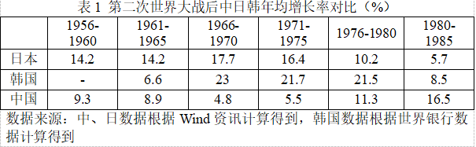
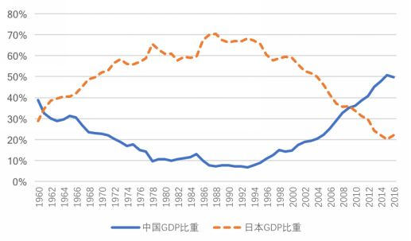
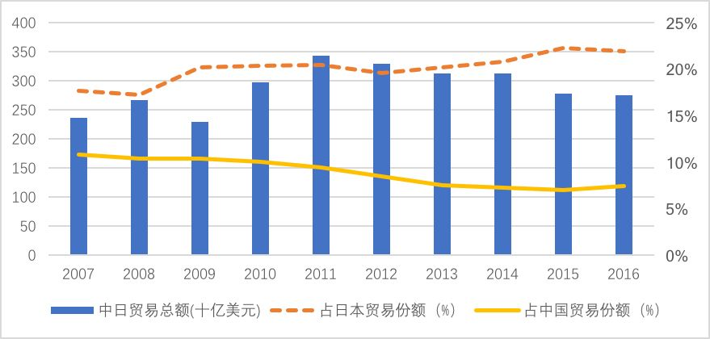

收录于合集

简
桑百川
对外经济贸易大学国际经济研究院院长，教授，博士生导师
**
**
王伟
对外经济贸易大学国际经济研究院博士生
【内容提要】亚洲金融危机推动了东亚合作的机制化建设，经过了20年的发展，本地区逐渐形成了以东盟为主导、“10+3”为核心、东亚峰会为主要平台的多层次合作框架。本文基于中日对东亚合作主导权博弈的视角，回顾了在域外因素影响下的中日韩东亚政策演变。本文认为当前东亚地区的合作困境源于本地区仍然存在的冷战对抗思维与零和博弈认知，而逆全球化给各国带来冲击的同时也提供了合作契机。中日韩应积极重启领导人对话机制，以互惠的经济关系和共同的和平诉求为合作基点，加快区域经济合作安排的谈判，利用边境自贸试验区的建设等途径，尽快在经济合作领域取得阶段性成果。
【关键词】东亚经济合作；危机驱动；逆全球化；主导权；区域全面经济伙伴关系
20世纪末的东亚见证了世界政治和经济格局的两个重大变化：第二次世界大战后逐渐形成的以美国和苏联为中心、在全球范围内争夺霸权的雅尔塔体系最终瓦解，世界政治在世纪之交处于两极向多极嬗变的过程；另一方面，东亚国家在经历了近30年的持续高速增长后挣扎于亚洲金融危机的泥淖中，本币贬值、外资撤离以及银行业的陆续倒闭正严重冲击着这个继欧洲、北美以外的又一新兴工业带。1997年的亚洲金融动荡直接加速了东亚经济合作的机制化进程，域内各国并没有采取传统以邻为壑的保护主义政策，而是在战略利益的多样性中寻得对经济合作需求的共性，以加速市场开放、深化东亚国家合作的政策安排来应对此次危机。
东盟和中日韩“10+3”合作框架应时而生，东亚经济合作正式进入制度化建设阶段。经过了20年的发展，本地区经济合作在取得了一定成效的同时，也面临着动力不足的困境。危机始终存在，在当前英美等国试图向历史回归，尝试退回到保护主义经济政策的背景下， 东亚国家能否实质性地深化合作，引领地区及全球经济增长，填补可能出现的全球权力真空，将决定下一个二十年的东亚经济合作是面临内部分化乃至停滞不前，还是 形成利益共同体，塑造出属于东亚的区域认同感。
**
中日韩的崛起及其东亚经济合作政策演变
与欧洲和北美地区不同的是，东亚的经济合作在大部分时间里并不是独立地由域内国家主导形成， **域外力量作为一个关键博弈方通常制约着东亚经济体能否成功的将合作理念转化为合作实践 。**这也在一定程度上解释了为何本地区的一些区域合作构想最终没能付诸于行动。因此对于东亚经济合作的研究需要放在一个更大的框架，即亚太的视角下，结合域外国家和战后东亚地区大国的崛起历程而加以分析。
（一）美日同盟背景下日本对东亚的定位 ****
第二次世界大战后初期 ，日本经济濒临崩溃，接近50%的工业设备和交通运输固定资产受到不同程度的破坏，实际国民生产总值仅相当于战前的60%，生产萎缩以及物资匮乏导致物价飞涨。战后美国最初驻兵日本时，为其制定的政策目标一是开展非军事化生产，瓦解能让日本拥有战争能力的社会制度和经济结构；二是推动经济民主化进程，通过土地改革、解散财阀和劳动立法，实行“倾斜生产方式”尽快恢复日本的工业生产能力。1950年中国和苏联签订同盟互助条约后，美国开始大幅调整对日政策，试图将后者作为远东地区遏制共产主义扩张的战略支点国家，以应对中苏这两个社会主义大国不久前的结盟。于是帮助日本制定战后经济复苏政策、尽快恢复其在东亚地区的经济地位便成为当时美国东亚政策的核心内容。同年爆发的朝鲜战争加剧了东北亚地区的对抗格局，出于战事的需要，美国在日本订购了大量的战备物资和劳务服务，为正处于经济恢复阶段的日本注入了一针强心剂。1950至1955年日本广义“特需收入”达到35亿美元，直接推动了其外汇储备从1949年底的2亿美元急剧增加到1952年底的11.4亿美元。以1955年为分界线，日本经济已经达到战前的最高水平，经济恢复期结束而由此进入高速增长时期。
**回顾第二次世界大战后日本的经济复苏过程， 美国在其政策制定和对外交往等事务中起着决定性的作用，日本也逐渐成为冷战期间美国在东亚的主要代理人。**从二战结束后到20世纪60年代，日本对于东亚经济合作的认知完全受限于美国的利益诉求和自身经济实力，采取追随美国外交理念、奉行多边主义的立场，未能提出独立的政策主张。布鲁斯·卡明斯（1999）曾评价到同样是作为战后解决方案，东北亚的多边组织和机制相对于欧洲地区要少得多，这一结果是1945年美国对日本实行单方面军事占领，以及随后东北亚地区被动适应冷战两极格局而出现分裂和对抗的产物。

**
**
**伴随着 1956至1973年增长奇迹的出现，日本在国际经济事务中的地位迅速提升。**同一时期日本的经济增长率大幅超过中国（见表1），经济体量上与韩国的差距也在迅速拉大。与此同时，“雁行模式”的实践推动了日本将劳动密集型产业转移到东南亚地区，增加了东亚地区开展经济合作的需求。20世纪60年代末，一些日本专家就开始呼吁建立太平洋经济圈。随着东亚经济体相继实行外向型的经济发展战略，要求加强区域合作的呼声越来越高。1980年，在日本“环太平洋合作圈”构想的基础上，第一届太平洋经济合作会议（PECC）得以举行，并正式提出了太平洋共同体的概念。1989年亚太经济与合作组织（APEC）的成立是亚太地区经济合作的一个重要里程碑，区域内第一个官方经济合作组织正式诞生。
**20 世纪90年代之前，东亚地区经济合作的地缘取向是包括美国在内的亚洲及太平洋区域，尽管这期间日本国内有倡导亚洲区域经济合作的主张，但官方层面上日本的东亚经济政策始终受制于美日同盟的约束。**日本及其东北亚近邻韩国在20世纪的大部分时间里都居于西方的霸权体系内，未曾实现如东南亚民族主义者所追求的独立自治。在中国综合国力尚未显著提升、不具备独自推动东亚经济合作能力的前提下，这一时期任何试图排除美国在外、忽略甚至挑战美国利益的区域合作方案都注定无法成行。
**另一方面，虽然东亚区域合作 先起于东南亚地区，但东盟的成立本身就带有获得美国等西方国家援助、遏制国际共产主义势力扩张的目的。**冷战期间，东盟与美国有着共同的战略利益，马凯硕（2017）直言这一时期的东盟无疑是亲美的。因此，20世纪末的东亚想要作为一个独立的区域范畴开展经济合作，需要具备两个关键因素：一是出现一个不囿于美国同盟约束，并且具有足够经济实力来推动地区发展的域内大国；二是能激发东亚各国展现出更大合作向心力的历史机遇。中国的崛起以及亚洲金融危机的爆发，适时地推动了东亚作为一个独立经济集团的形成。
（二）作为合作推手的中国崛起和亚洲金融危机 ****
与东亚大部分国家的战后经济复苏过程有所不同，中国是在实行中央计划经济的基础上开始了国民经济恢复时期。朝鲜战争结束后一直到 20世纪60年代，中国遭到许多市场经济国家的禁运。严峻的国际形势以及国内的政治动荡，导致经济发展进程常常被打乱，尽管剔除价格因素后1957至1978年实际年均增长率也达到了3.9%，但生产技术水平已大幅落后于日本及其它东亚新兴工业经济体。因此当70年代末中国开始向市场经济体制过渡的时候，由于社会物资极度匮乏、工业生产技术水平低，未能拥有足够的外汇用以引进设备和技术。于是中国通过承接东亚新兴经济体转移的劳动密集型产业来发展加工贸易，并以此为契机顺利地融入到东亚生产网络中，加工贸易占中国对外贸易比重也迅速由1980年的4.4%上升到1991年的42.2%。
随着中国在东亚经济地位的不断提升，20世纪90年代中国开始主动参与东亚区域合作。1991年亚太经合组织正式吸纳中国为成员国，作为一个区域协商与合作机制，APEC采取集体承诺、单边行动的方式来推动本地区的经济技术合作，允许成员国较为自主的安排市场开放进程，中国也借此显示本国深化改革开放的决心。APEC虽然是一个合作论坛，但对于中国逐渐融入地区合作机制提供了一个重要的过渡性平台。APEC在落实具体目标进程时采取软约束的推进方式，与通过谈判签订具有法律效应的区域贸易协定有着本质的不同。
在亚洲金融危机的推动下，东亚国家寻求以一种更为主动的方式参与地区经济合作。结合自身的利益诉求，中国也开始尝试在东亚经济合作中进一步发挥建设性作用。1997年12月，在东盟的邀请下，中日韩和东盟国家领导人首次在马来西亚举行非正式对话与合作会议，就如何应对危机、深化东亚地区经济联系以及东亚未来发展等问题达成了基本共识。会议期间东盟还分别与中日韩举行了领导人非正式会晤，并逐步发展为“东盟+”形式的年度峰会机制。
这一时期，中国开始有意识的在地区经济活动中承担更多的国际责任，以推动次区域经济和合作的发展。金融危机期间中国保持人民币汇率稳定，避免东亚国家的货币出现竞争性贬值，还通过多边组织平台向受危机冲击的国家提供资金援助。在1998年举行的第二次“10+3”领导人会议上，中国就应对危机提出了具体的建议：设立各国央行与财政部副手会议，就国际金融改革和短期资本流动的监控问题展开研究。这也使得东亚各国政府的职能部门之间首次出现了高级别的对话和协商平台，可以就本地区重大经济问题及时开展务实合作。金融危机后，中国率先提出与东盟构建“10+1”自由贸易区，并开创了“早期收获”模式。在照顾东盟成员国多样性和各方开放水平的前提下，通过分步谈判、边谈边建的方式，逐步完成货物贸易、服务贸易和投资领域的开放谈判。在此带动下，东盟先后与韩国、日本、澳大利亚、新西兰以及印度等国商谈自贸区建设工作。另外，中国对东亚合作的贡献还在于支持东盟在东亚合作中发挥主导作用，积极参与地区对话平台和经济合作，为维护东亚和平和稳定发挥了建设性作用。
（三）韩国的自主外交和平衡政策 ****
朝鲜战争后为帮助韩国重建经济，美国向其提供了大量的经济援助。尽管 1956年韩国的生产和消费已基本达到战前水平，但经济发展极度依赖外部援助。20世纪60年代，美国决心在削减对韩资金援助的同时，希望日本能参与到韩国的经济建设中，帮助后者实现经济自立，于是积极促成韩日邦交正常化。朴正熙政府在自身执政理念和美国外交压力的影响下，克服国内强烈的民族主义情绪，最终于1965年和日本实现了两国关系正常化。日本对韩国的经济援助、资本投资以及技术支持也促进了韩国顺利实现经济起飞。同一时期，韩国开始实施以出口为导向的外向型经济发展战略，发挥本国劳动力资源优势，很快地实现了工业化进程，创造了举世瞩目的“汉江奇迹”，并于20世纪末成功跨越“中等收入陷阱”步入高收入国家行列。
**不同于中日两国对东亚经济合作的主导权争夺， 韩国在其中尝试发挥引导而非领导的作用，坚持中间立场，平衡地区大国的影响力。**作为多边贸易体制的受益者，韩国从20世纪中期就一直强调多边主义原则。但随着欧盟和北美地区在80年代末加速区域经济一体化进程，西方发达国家开始推行地区保护主义政策，以增加区域内部贸易活动。而韩国以出口为导向的经济结构对外部市场依附性较强，于是90年代起韩国开始在双边和区域层面的经济合作中寻求突破，积极推进自由贸易区的缔结工作。截止到2017年底，韩国签署并生效的FTA数量达到了16个，在亚洲地区仅次于新加坡，另外还有10个自贸区已经开启了谈判进程。在次区域经济合作上，除了作为初始成员国参与到APEC的成立工作中，韩国在“10+3”框架下也发挥了建设性作用，如倡导成立东亚自贸区，推进中日韩自贸区政策性研究。较之于中日两个东北亚邻国而言，韩国参与东亚经济合作的非经济因素，即有关战略设计层面的考量要相对少一些，更多的是出于经济发展的需要，通过扩大海外市场、引进新的投资和资源来为经济增长提供持续动力。
中日两国有关东亚经济合作的主导权博弈
（一）危机驱动下的东亚经济合作 ****
东亚地区经济合作的深化在一定程度上是东亚国家面临危机后，共同应对外部环境制约和内部发展诉求的结果，两次金融危机以其极大的破坏力而成为本地区合作的关键节点。 1997年金融危机之前，东亚国家之间的经济合作是内嵌于亚太框架下进行的，并没有在一个更小的次区域层面上构建自身的合作机制。作为亚太区域内第一个官方经济合作平台，1989 年成立的APEC在上升为领导人对话合作机制后不久，就制定了推进亚太地区经济开放与合作的“茂物目标”，以及加快实现“茂物目标”的“部门提前自愿自由化（EVSL）”，由APEC成员通过自愿参与的方式先行开放一部分行业。亚洲金融危机的爆发促使东亚国家将重点放在国内经济的恢复上，转而对APEC的自由化进程采取观望态度，EVSL计划最终没能落实。APEC为东亚国家探索经济合作提供了一个良好的平台，但限于其合作论坛的定位，它对于亚洲区域经济合作并未产生实质性的影响。后又因“茂物目标”进展缓慢，APEC逐渐沦为亚太地区的“清谈馆”。
发端于东盟国家的亚洲金融危机对于东亚经济合作而言是一个转折点，直接推动了本地区经济合作的机制化建设。 为提升本地区危机应对能力、摆脱对美国及国际金融机构的过度依赖，东亚经济体于20世纪末在双边和次区域层面上寻求更深层次的经济合作。这一时期开始，在地理范畴上，东亚国家间的经济合作重心由亚太回归到东亚。东盟- 中日韩（“10+3”）合作平台得以建立，并很快进入了机制化建设阶段，本地区逐渐形成了以东盟为主导、“10+3”为核心、东亚峰会为主要平台的多层次合作框架。“10+3”的诞生和发展使得东亚可以作为一个区域经济集团与其他经济体或组织开展对话，东亚开始有了区域主义的特征。“10+3”框架下的机制化建设意味着各国政府开始直接参与并主导东亚地区事务，通过制定政策、行政立法等方式为合作提供支持，主要内容有：定期举办领导人会议、部长及高管会议就东亚地区的经济事务和合作规划展开对话；发表《东亚合作联合声明》，列定了经济和社会领域、政治和其他领域的合作重点；成立“东亚展望小组”，探讨东亚共同体的建设，制定东亚合作的中长期蓝图；建立东盟与中日韩三个“10+1”对话机制，举办东亚峰会，启动区域自由贸易区的可行性研究等。
**相比于亚洲金融危机的直接影响， 2008年美国次贷危机对于东亚经济合作的冲击更多的是传导式的。**区域经济合作开始朝着超大型区域自贸协定的方向发展，尤其是2009年美国决定加入并主导TPP谈判，在相当长的一段时间内使得东亚经济合作面临着分化和碎片化，陆续加入TPP的部分东亚国家有意将这一高标准的自贸协定作为其参与区域经济合作的重心。作为应对措施，2011年东盟开始考虑基于“10+6”框架的“区域全面经济伙伴关系（RCEP）”谈判。东亚经济合作一直以来是先有经济一体化程度的提高，再有自贸协定安排的签署，即所谓市场驱动型一体化，而RCEP的提出是东盟在面临外部压力时试图通过协议的签订来驱动一体化水平的提高，以维持东亚国家参与经济合作的向心力，避免内部分化。21世纪兴起的双边或次区域经济合作安排并未改变东亚经济合作的多层次框架，但本地区的合作重心开始转向更务实的制定覆盖东亚地区的自贸协议安排。
（二）从中日博弈到东盟的中心地位 ****
日本在引领东亚经济发展的过程中扮演着先行者的角色，在 “雁行模式”的推动下，东亚其他经济体获得了资金和技术支持。早在冷战结束之前日本即已崛起为世界第二大经济体，20世纪80年代美日贸易摩擦加剧后，日本试图弱化美国对于亚洲区域经济合作的绝对影响力。尽管日本GDP占东亚地区的比重曾一度达到70%（见图1），但限于政治和安全领域上对美国的依赖，日本未能把经济崛起的现实转化为推动东亚区域经济合作的政治力量。亚洲金融危机之后，日本一改战后对区域经济合作的审慎态度，开始由多边向双边和区域主义转变。同时中国也意识到加强与周边国家的合作符合自身基本利益，于是东亚经济合作的主导权之争逐渐转为中国与日本之间的博弈。而中日竞争的副产品便是东盟凭借其“大国平衡战略”位居东亚经济合作的中心地位。

图1 中日GDP占东亚地区比重变化
**日本担心中国综合实力的强势崛起会推动后者主导东亚次区域经济合作，在 “10+3”框架中难以限制中国的话语权，**因此希望通过引入域外和日本有着共同战略利益的经济体参与到东亚经济合作中来平衡中国的影响力。具体到东亚地区的自由贸易区规划而言，最初两国博弈的重点在于是否扩大自贸区的建设范围。亚洲金融危机后“10+3”领导人会议一经成立，东亚经济合作便进入了快轨道。在1998年中国提出举行央行及财政部副手会议的同次会晤上，各国领导人根据时任韩国总统金大中的提议，成立由各国专家学者组成的“东亚展望小组（EAVG）”，就如何加强东亚国家在经济、政治以及安全领域的中长期合作展开研究。2001年EAVG提交的最终研究报告建议召开东亚“10+3”领导人会议，并将建成“东亚共同体”作为东亚合作的长期目标。共同体的经济合作层面，则以东盟及中日韩为基础的东亚自贸区作为建设的重要载体。2004年底的“10+3”领导人会议上，中国表示愿意牵头启动东亚自由贸易区的可行性学术研究。但就在2006年经济部长会议上审议这份由中国主导完成的最终报告时，日本突然否定了这个本国专家曾参与研究过的方案，不同意以“10+3”为基础开展自贸区，转而提议成立以东亚峰会“10+6”为基础的“东亚紧密经济伙伴关系”。2008年韩国也参与到对东亚自贸区的主导权博弈中，牵头成立了东亚自贸区第二阶段可行性研究，最终方案和中国2006年提交的报告更为接近，即支持以东盟和中日韩为基础的自贸区建设，但也提出了更具操作性的建议，例如从整合3个“10+1”自贸协定的原产地规则、签署贸易便利化协议等途径逐步开展“10+3”自贸区谈判。由于当时东盟更为关注自身共同体的建设，便利用中日韩之间的分歧暂时搁置了东亚自贸区的规划。
外部经济形势的变化始终深刻的影响着东亚经济合作的走向。 2006年美国提出在APEC框架下推动亚太自贸区（FTAAP）的建设，但未能得到大多数APEC成员国的响应。奥巴马政府转而于2009年宣布美国将参加并领导“跨太平洋伙伴关系协定（TPP）”谈判，旨在打造高标准的下一代贸易与投资规则。美国作为最终消费市场的巨大吸引力，使得陆续有东南亚国家宣布加入TPP谈判，东盟面临着成员国合作向心力趋弱的压力。与此同时，2008年底中日韩三国领导人首次在“10+3”框架外举行正式会晤，并同意将峰会机制化。2010年三国领导人宣布启动中日韩自贸区官方政策性研究，并拟定于2012年开启谈判进程，此举也威胁到了东盟在东亚经济合作中的主导地位。
在区域主义大行其道的背景下，东盟于2012年正式提出构建RCEP以进一步巩固其中心地位。不同于TPP以推动市场高度开放为基准，RCEP主要在于推动东亚生产网络的调整、改善东亚地区经济发展环境，通过推行更为灵活的开放安排来兼顾不同经济体的开放能力。至此有关东亚自贸区的日本方案被最终采纳，而东盟从一开始就发挥了主导作用，从倡议的提出到谈判规则的制定都是在东盟的推动下进行的。 中日有关主导权竞争的直接结果是东盟逐渐处于东亚经济合作的中心地位，后者倡议成立的诸如 “东盟+”、东亚峰会等合作机制则为地区成员国提供了对话和协商平台。 ****
（三）东亚经济合作的困境 ****
当前东亚经济合作面临着动力不足的困境， 中日这两个地区大国之间的关系出现了一些新的特征，“政冷经热”现象有所逆转，政治和安全领域的高度失信逐渐传导至经济层面。中日货物贸易往来近些年表现为几个特点：一是在中国对外贸易长期保持顺差的同时对日本却有着持续的赤字；二是自2011年中日贸易总额达到3428亿美元的历史最高水平后逐年下降，2015年降幅甚至达到10.8%（见图2）；三是中日贸易额占日本对外贸易总额常年维持在21%上下，而占中国的贸易总额却从2000年的17.5%逐年下降至2016年的7.5%。

图2 2007-2016中日贸易额变化
另外，尽管2017年“中日联合舆论调查”的民调结果与当前中日关系有所改善的现状基本相符，并且中日受访者对未来两国关系走向和在国际事务上的合作有着相对乐观的憧憬，但中日向好的民意基础仍不牢固，负面评价占据主流。中国受访者认为当前中日关系“差”或“比较差”的比例仍高达64.2%，日本受访者的这一比例相对低一些，但也达到45%。中国受访者对日本整体印象呈“不好”或“相对不好”的占66.8%，而日本受访者则高达88.3%。政治层面的信任赤字已经对经济部门和两国民意基础造成了负面影响，加大了中日以深化经济合作作为改善两国关系突破口的难度。
东亚经济合作面临的困境源于本地区仍然存在的冷战对抗思维与零和博弈认知。 不同于战后欧洲大陆上存在着德国和法国这两个稳定的领导者，东亚地区大国缺乏就东亚地区事务开展合作的历史经验，以及在重大现实问题上的共识，政治和安全领域的共同利益较少。由于日本的崛起是建立在单一的经济实力上升的基础上，而综合国力并未有相匹配的提升，不足以支撑日本进行全球战略竞争。中国的崛起是建立在综合实力快速增加的基础上，“一带一路”倡议的提出和建设表明中国拥有开展跨区域战略竞争的能力。但就东亚经济合作而言，日本的地区战略越来越具有对冲色彩，即一方面通过合作加强与中国及其他东亚国家的经济联系，维持经济发展稳定，另一方面试图回归到强化美日同盟的路径上，以稀释这个经济总量已接近自身三倍的东北亚邻居的影响力。 在日本采取对冲策略的前提下，中国所拥有的跨区域竞争能力目前还无法转化为推动本地区经济合作的现实。 严格来说，中日之间不具有大战略对抗的性质，主要还是基于利益差别的竞争，但东亚经济合作若想取得实质性进展有赖于中日两个地区大国携手提供稳定的领导机制。
**
逆全球化与东亚经济合作展望
2008年金融危机之后，全球保护主义迅速抬头，以邻为壑的贸易政策层出不穷。WTO成员国自危机后颁布了2978项新的贸易限制措施，到2016年10月仅有25%的比例被各国取消。贸易增速也逐渐减少到和产出增速相同的水平，2016年贸易增长率仅为1.3%，与产出增速的比值更是低至0.6，危机后首次低于1，而在全球化最为鼎盛的20世纪90年代贸易增速基本比世界经济的增长速度快一倍。政治层面上，推崇民粹主义政党的势力有所加强，英国脱欧、美国特朗普胜选后的保护主义政策以及意大利修宪公投失败为全球化的发展蒙上了一层阴影。有观点认为此轮已历经30多年的全球化进程来到了十字路口，将面临停滞甚至是倒退的风险。
本文认为现阶段的经济全球化已经形成，短时间内被逆转的可能性很小，全球化将继续在波动中前行。从中国提出 “一带一路”倡议后得到众多响应，可以看出大多数国家仍是全球化的支持者，逆全球化并没有表现出规模化趋势。事实上，对经济全球化的不满始于经济层面，通过投票选举等方式传导至政治层面，再由政治决策左右一国的经济行为。作为结果，逆全球化之于东亚经济合作，如特朗普政府决定退出TPP、重新商谈美韩自贸协定等政策行为，也确实对东亚国家的地区策略造成了一定的冲击。对逆全球化现象的再认识有助于寻求下一阶段东亚经济合作的新机遇。
（一）对逆全球化现象的再认识 ——经济不平等的政治反应 ****
虽然金融危机之后 “黑天鹅事件”此起彼伏，但当前阶段的逆全球化思潮更大程度上是发生在少数发达经济体内部、带有政治周期性和经济发展阶段性的现象，一些政客有意地利用反全球化的施政纲领，来得到对当前境遇不满的选民的支持。 作为逆全球化最常见的经济表现形式，贸易保护主义仍处于可控范围内。 WTO贸易政策审查机构的统计结果显示，虽然金融危机后WTO成员国制定了许多新的贸易限制措施，但这一趋势在逐渐放缓。2016年10月至2017年5月，WTO成员国共颁布了74项新措施，平均每月不到11项，为2008年以来的最低水平。贸易增速持续下滑或许与保护主义有关，但全球市场有效需求不足、贸易自由化步伐放缓以及全球价值链的国际分工程度接近极限同样可以对此做出解释。另外，尽管2017年初G20财长和央行行长会议因为美国在关键议题上不愿妥协，罕见地放弃了支持自由贸易的声明，但7月的峰会上各国领导人还是在公报中达成了继续反对贸易保护主义的共识。全球经济政策分歧明显，但贸易失衡仍可调和，经济全球化仍旧以螺旋上升的方式进行着。
逆全球化事件的出现本质上还是源于对利益的诉求，当前由少数发达国家引领的 保护 主义思潮，反对的并不是经济全球化进程本身，而是其利益分配失衡的结果。 以特朗普政府宣布退出TPP、重新商谈北美自贸协定以及推动制造业回流等政策为例，其目的还是在于吸引全球投资增加就业、扩大出口改善贸易收支状况，而这仍属于全球化的范畴内。IMF在2017年7月底的一份报告中指出，当前新兴经济体外部失衡情况有所改善，发达经济体则持续加剧，表现为德国和韩国继续保持大规模经常账户顺差，而逆差则越来越集中于英美等少数发达经济体，由此可能会引发贸易保护主义升温。IMF因此呼吁拥有贸易顺差的国家，在财政状况允许的情况下应加大财政政策刺激力度，刺激国内需求和消费，而逆差经济体应采取财政整顿行动，逐步推进货币政策正常化和提高整体储蓄水平，以共同避免贸易保护主义措施的出现，缓解当前少数发达经济体对全球化的抵触情绪。
当前英美等国对 保护 主义历史的回归是经济全球化过程中国际和国内经济利益分配失衡在国家政权上的体现，表现为一国通过制定 保护 主义政策来试图重塑或影响经济全球化进程，以满足国内民众对重新分配全球经贸利益的诉求。 麦肯锡全球研究院在2016年的一份研究报告中指出，2005到2014年间，被调查的25个发达经济体中，大约有65%-70%的家庭来自薪资和资本的实际收入出现停滞或者减少的情况，其中意大利（97%）、美国（81%）和英国（70%）依次为家庭实际收入停滞现象最严重的三个发达经济体，而这三个国家的民众目前对全球化也表现的最为排斥。相应的，许多发展中国家特别是新兴经济体成为这一轮全球化的首要受益者，国际经济利益的分配明显失衡。
经济全球化并没有给所有国家和地区带来福祉，反而扩大了国家之间和国家内部的分配差距，由此招致了众多的反对者。科技的进步和基础设施水平的提高促进了公众对于国际事务的参与度，而日益加大的不平等催生出了经济全球化的政治反应。约瑟夫·奈（2012）曾指出：不平等会导致政治反应，特别是当不平等和不稳定相结合的时候，例如发生导致大规模失业的金融危机和经济萧条，这样的政治反应可能会最终限制世界经济全球化的步伐。2016年特朗普的上台以及英国脱欧公投，都是全球化过程中选民所经历的经济不平等在一国政治层面上的映射，当再通过政策途径作用于经济层面时，英美等国之前深度参与的区域合作就首当其冲地受到了这些政策的冲击。
（二）东亚经济合作中的美国因素 ****
美国作为世界第一大经济体，传统上对于亚太地区的发展 扮演着关键的角色，而未来特朗普政府的政策走向则为东亚合作带来了极大的不确定性。相对于奥巴马时期较为清晰的“亚太再平衡”战略，特朗普执政一年之后仍未就亚太地区推出系统的地区战略。一方面，从2017年APEC峰会上特朗普有关印太概念的演讲，以及任内首份《国家安全战略报告》中可以看出，现任美国政府内部有关地区战略的设计正在加强。另一方面，特朗普的外交政策又表现出一定的矛盾性，在TPP剩余11个成员国宣布完成新版协议的谈判之后，特朗普表示美国将考虑有条件的重返TPP谈判。
当前特朗普政府的亚太政策展现出三个特点：第一，虽然从出访时间上来看，特朗普仍高度重视亚太地区，但相对于上一任美国政府，亚太在美国全球战略中的重要性趋于普通化；第二，特朗普的亚太政策较为破碎且不够系统，未能对印太概念做出详细的阐述，特别是放弃了 T PP 这一经济层面的抓手；第三，贸易平衡、朝鲜半岛成为特朗普在亚太地区关注的主要议题，特别是半岛问题消耗了美国大量的外交资源， 而特朗普在出席了APEC会议后缺席了东亚峰会，未对东亚合作表现出足够的耐心。 总体而言，在 “美国优先”政策理念的影响下，特朗普政府过于强调双边对话，对推动东亚乃至亚太地区的经济开放和合作安排动力不足。 ****
与特朗普政府大幅提升对朝核问题的关注度、增加本地区军事和安全投入相对应的是， 美国在东亚经济领域的影响力日渐式微。 特朗普通过大幅减少企业税负、放松政府监管来推动制造业回流，并试图利用保护主义政策缩小对东亚国家的贸易逆差，这些违背市场经济原则的对外政策将会增加东亚国家的经济风险，损害区域产业链的构建。美国的对外实践和经济政策的溢出效应在冲击了地区合作的同时，却也增加了东亚国家的合作空间和契机，促进了东亚国家对于深化本地区经济合作的需求。但正如弗朗西斯·福山和罗伯特·穆加（2018）所述，全球自由秩序的未来在很大程度上取决于美国民粹主义的走向，而可以确定的是前方的道路充满不确定性，这也正是美国因素影响下的未来东亚经济合作的真实写照。
（三）东亚经济合作的新机遇 ****
东亚国家普遍实行外向型的经济发展战略， 对外部市场较为依赖，作为全球化的受益者，本地区不会出现政治主导下的逆全球化。域外大国的保护主义政策是当前逆全球化思潮影响东亚经济合作的主要途径，其中最为深刻的是2017年初特朗普政府宣布美国正式退出TPP，转而推行双边层面的贸易谈判，以利用自身的谈判优势获得更有利的贸易地位。美国退出TPP后，作为现有11个成员国中经济体量最大的日本决心继续推进协议。在2017年7月举行的TPP成员国首席谈判官会议上，各国达成了将在最小范围内修改12国版本TPP协议的共识，以早日让协议生效。2018年1月23日，在美国退出TPP一周年之际，剩余11国完成了“跨太平洋伙伴全面进展协定”（CPTPP）的谈判，并宣布即将完成签署工作。CPTPP保留了原版TPP协议超过95％的内容，且更关注成员国发展的差异性和开放的渐进性，但在失去美国这个GDP占TPP经济总量达60%的最终消费市场后，CPTPP的影响力将显著下降。
**TPP 受挫后的调整对亚太区域经济发展的长期影响一时还难以辨别，但短期而言将有助于缓解亚太地区的竞争性自由化，提高东亚国家开展域内经济合作的向心力。**特别是对于东亚地区另一个合作机制RCEP而言，东盟主导的RCEP谈判面临的竞争和分化压力大幅减少，许多同时参与到两个谈判中的东亚国家已表示要将重心放在推动RCEP谈判完成上。截止到2017年10月底，RCEP已进行了20轮谈判，但成员国之间分歧明显、谈判进展缓慢，2017年内完成谈判的期许再次落空。11月14日，首次RCEP领导人会议在菲律宾首都马尼拉举行。这也是RCEP谈判机制自2012年启动以来，各国就此项议题举行的第一次领导人会议。事实上，RCEP谈判进展缓慢与TPP遇阻也不无关系。东亚经济合作一直以来具有明显的危机驱动属性，当TPP进展顺利时，感受到紧迫性的RCEP会加快谈判进程；当TPP受挫时，RCEP谈判国对于分歧的关注度往往又超过共识。CPTPP签署后，RCEP动力不足的问题可能会得到一定缓解。
**东亚各国目前对加快本地区合作进程均表现出了较强的意愿，尽快完成 RCEP谈判应成为东亚经济合作的首要议题。**目前RCEP成员国主要有三种立场，一是以日本、澳大利亚为代表的TPP成员国主推高质量的谈判标准，反对达成任何缺乏实质性内容的共识；二是中国和菲律宾等国把尽快达成协议作为优先议题，倡导先建立一个合作框架，再渐进性的提高合作标准。第三种则是相对持中立态度的缅甸和柬埔寨等国，更关注于从RCEP合作中获得科技和基础设施建设方面的支持。 **考虑到东亚国家经济发展水平的多样性，参考中国 —东盟自贸区建设时采取的渐进性路径是更为可行的方案，即相对发达的经济体开放得快一点，竞争性部门的自由化进程早一些开始，发展到一定阶段后再推进升级版协议的谈判。**为加快RCEP的谈判进度，可以考虑在谈判中做减法，让一些在个别行业不具备开放条件的国家先行退出该领域谈判，等机会成熟了再重新加入。区域经济合作本身是求同存异、寻求共同利益基础的过程，分歧的解决还有赖于成员国展现出较强的政治决心和执行力。
最后，加强东北亚三国的政治互信度对东亚经济合作而言是一个重要且棘手的议题。 中日韩领导人对话是在“10+3”机制下发展起来的，在峰会难以重启或连续召开的前提下，各国政治关系的改善还应立足于东亚这一合作层面。尽管中日韩的关系时常有起伏，但三国之间有着共同的稳定器，即互惠的经济关系和共同的和平诉求。中日作为东亚地区大国，在东亚经济合作中既有竞争性分离，如对东亚主导权之争，也有竞争性合作，如构建中日韩自贸区。尽管近些年中日经济关系越来越为政治信任赤字所累，但总体而言双方经济利益基础仍然广泛，合作空间较大。
当前中日正处于双边关系中的一些特殊时间点上，2017年是中日邦交正常化45周年，9月份两国在北京人民大会堂低调举行了10年来的首次纪念活动，双方的最高层官员并未有出席此次活动。尽管2017年下半年中日双边关系有所回暖，但还未能恢复到2012年之前的水平。2018年对于两国关系有着特别的意义，不仅是《中日和平友好条约》缔结40周年，同时也是《中日联合宣言》发表20周年，两国领导人也均表露出希望借此契机改善双边关系。结合此前日本首相安倍晋三表态愿意在“一带一路”框架下，与中国就基础设施建设和项目融资等领域展开合作，双方应寻求在2018年内实现两国领导人互访的可能性。中日关系长期以来徘徊于改善和恶化之间，当前有推动双方深化合作的积极因素，例如特朗普政府所表现出的政策不稳定性、逆全球化背景下各国对于开展经济合作的诉求，也有会涉及到两国战略竞争和历史问题的敏感议题，例如日本对于旨在限制中国的印太战略的支持，以及2019年中国建国70周年大阅兵可能带来的影响。东亚经济合作的长足发展，需要中日着眼大局、避免触及两国关系的下限，强调共同利益、提高双边关系的上限。另外，中日媒体在改善民间关系和巩固民意基础上还可以发挥更大的建设性作用。
韩国近些年政局动荡、政策调整幅度大，导致中韩关系较不稳定。传统上出于中国在朝鲜半岛事务中的作用和影响力，韩国会不断矫正和中国的关系，使其不会过度失衡。 而 韩国在朝鲜半岛事务、中国缓解美国亚太或印太战略压力的过程中可以扮演积极作用，也使得中国会慎重考虑和韩国的关系走向。 “萨德”的部署对中韩关系造成了极大的冲击，如何避免中韩关系过度失衡是需要双方特别是韩国方面的努力。另一方面，从中韩两国于2017年10月有关延长货币互换协议的期限达成一致来看，目前双方都有继续开展双边经济合作的意愿。12月中旬韩国总统文在寅对中国展开了为期四天的国事访问，也说明中韩双方正在积极推动双边关系正常化。
中日韩三方应积极推动领导人会议重新召开，加快中日韩自贸区谈判进程，通过开展功能性合作，即针对具体事务或领域进行协商，以尽早在经济合作领域取得阶段性成果。其中通过边境自贸试验区的建设促进中日韩合作是一个可行路径，包括建立贸易便利化示范区，推进人民币与韩元和日元的直接交易；以中国巨大的消费市场为基础，利用保税港区面向日韩发展保税贸易与离岸贸易，促进商品的流通；结合试验区的地缘优势，引进新兴服务业的产业链和管理模式，促进中日韩服务业合作。 当前东亚地区正面临要素成本上升、产业重新布局的转型期，各国应加快贸易及投资的自由化和便利化进程，高举经济全球化大旗、深化全球治理，中日韩作为域内大国需要承担更多发展责任并在其中发挥引领作用。
注：本文经作者授权并由国政学人编辑首发，转载需联系授权。篇幅有限，参考文献见原文。
来源：《东北亚论坛》2018年第5期
编辑：凌宇